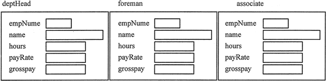
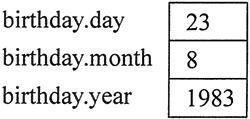
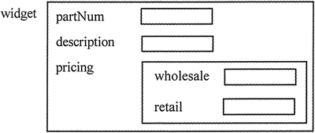

C++结构体完全攻略（超详细）
虽然今天结构体较少使用，但知道它们是什么，以及如何使用它们仍然很重要，这并不仅仅是因为可以在较老的程序中遇到它们，还因为在某些情况下，类的实例无法使用，这时必须使用结构体。
声明结构体的方式和声明类的方式大致相同，其区别如下：
- 使用关键字 struct 而不是关键字 class。
- 尽管结构体可以包含成员函数，但它们很少这样做。所以，通常情况下结构体声明只会声明成员变量。
- 结构体声明通常不包括 public 或 private 的访问修饰符。
- 类成员默认情况是私有的，而结构体的成员则默认为 public。程序员通常希望它们保持公开，只需使用默认值即可。
以下是一个结构体声明的示例，该结构体将 5 个变量绑定在一起，保存了员工的工资单数据。这个特殊结构体的名称是 PayRoll。请注意，它以大写字母开头，这和类名使用大写字母开头的约定一样。另外还要注意，与类声明一样，在结构体声明的大括号后面必须有一个分号。C++ 中保留了C语言的 struct 关键字，struct 和 class 基本是通用的，只有几个细节不同，感兴趣的小伙伴请猛击这里了解详情。
struct PayRoll
{
int empNumber;
string name;
double hours,payRate,grossPay;
};
正如在类的对象被创建之前，类声明不会被实例化一样，结构体声明不会创建任何结构体的实例。本示例中的结构体声明只是告诉编译器PayRoll结构体看起来的样子。它本质上是创建一个名为 PayRoll 的新数据类型。定义 PayRoll 结构体的变量和定义其他任何变量的方式并无二致，首先列出数据类型，然后是变量名称。以下定义语句创建了 PayRoll 结构体的 3 个变量：
PayRoll deptHead, foreman, associate;
它们每一个都是 PayRoll 结构体的实例，可以被分配和拥有自己的内存，以保存其成员数据。请注意，尽管 3 个结构体变量具有不同的名称，但每个变量都包含具有相同名称的成员，如图 1 所示。
图 1 每个结构体变量都包含具有相同名称的成员
初始化结构体
当定义结构体变量时，可以通过两种方式初始化它：使用初始化列表或构造函数。初始化列表
初始化结构体变量成员的最简单的方法是使用初始化列表。初始化列表是用于初始化一组内存位置的值列表。列表中的项目用逗号分隔并用大括号括起来。例如，假设已经声明了以下 Date 结构体：
struct Date
{
int day, month, year;
};
定义和初始化 Date 变量的方式是：先指定变量名，后接赋值运算符和初始化列表，如下所示：Date birthday = {23, 8, 1983};
该声明定义 birthday 是一个 Date 结构体的变量，大括号内的值按顺序分配给其成员。所以 birthday 的数据成员已初始化，如图 2 所示。
图 2 已经初始化的 birthday 的数据成员
也可以仅初始化结构体变量的部分成员。例如，如果仅知道要存储的生日是8月23日， 但不知道年份，则可以按以下方式定义和初始化变量：
Date birthday = {23,8};
这里只有 day 和 month 成员被初始化，year 成员未初始化。但是，如果某个结构成员未被初始化，则所有跟在它后面的成员都需要保留为未初始化。使用初始化列表时，C++ 不提供跳过成员的方法。以下语句试图跳过 month 成员的初始化。这是不合法的。Date birthday = {23,1983}; //非法
还有一点很重要，不能在结构体声明中初始化结构体成员，因为结构体声明只是创建一个新的数据类型，还不存在这种类型的变量。例如，以下声明是非法的：
//非法结构体声明
struct Date
{
int day = 23,
month = 8,
year = 1983;
}；
因为结构体声明只声明一个结构体“看起来是什么样子的”，所以不会在内存中创建成员变量。只有通过定义该结构体类型的变量来实例化结构体，才有地方存储初始值。构造函数初始化结构体
虽然初始化列表易于使用，但它有两个缺点：- 如果有某个成员未被初始化，那么在这种情况下，跟随在该成员后面的成员都不能初始化。
- 如果结构体包括任何诸如字符串之类的对象，那么在许多编译器上它都将无法运行。
在这些情况下，可以使用构造函数来初始化结构体成员变量，这和初始化类成员变量是相同的。与类构造函数一样，结构体的构造函数必须是与结构体名称相同的公共成员函数，并且没有返回类型。因为默认情况下，所有结构体成员都是公开的，所以不需要使用关键字 public。
以下是一个名为 Employee 的结构体的声明语句，它包含一个具有两参数的构造函数，以便在创建一个 Employee 变量而不向其传递任何参数时，提供默认值：
struct Employee
{
string name; // 员工姓名
int vacationDays, // 允许的年假
daysUsed; //已使用的年假天数
Employee (string n ="",int d = 0) // 构造函数
{
name = n;
vacationDays = 10;
daysUsed = d;
}
};
访问结构体成员
结构体成员的访问方式与类的公共成员一样，都是使用点运算符。但是，类的数据成员通常是私有的，必须通过函数访问。因为结构数据成员是公共的，所以它们可以被直接访问，并且可以像常规变量一样使用。以下语句即可为前面创建的每个 PayRoll 变量的 empNumber 成员赋值：deptHead.empNumber = 475; foreman.empNumber = 897; associate.empNumber = 729;以下语句将显示 deptHead 变量所有成员的内容：
cout << deptHead.empNumber << endl; cout << deptHead.name << endl; cout << deptHead.hours << endl; cout << deptHead.payRate << endl; cout << deptHead.grossPay << endl;下面的程序是使用 PayRoll 结构体的完整程序。请注意，在 cin 语句、cout 语句和数学运 算中，单个结构体成员的用法和常规变量基本上是一样的。
#include <iostream> #include <iomanip> #include <string> using namespace std; struct PayRoll { int empNumber; // Employee number string name; // Employee name double hours, // Hours worked payRate; // Hourly pay rate }; int main() { PayRoll employee; // Employee is a PayRoll structure double grossPay; // Gross amount the employee earned this week cout << "Enter the employee1s number:"; cin >> employee.empNumber; cout << "Enter the employee's name: "; cin.ignore();// Skip the '\n' character left in the input buffer getline(cin, employee.name); cout << "Hours worked this week: "; cin >> employee.hours; cout << "Employee's hourly pay rate: "; cin >> employee.payRate; // Calculate the employee's gross pay grossPay = employee.hours * employee.payRate; // Display the results cout << "\nHere is the employee1s payroll data:\n"; cout << "Name: " << employee.name << endl; cout << "Employee number: " << employee.empNumber << endl; cout << "Hours worked: " << employee.hours << endl; cout << "Hourly pay rate: " << employee.payRate << endl; cout << fixed << showpoint << setprecision(2); cout << "Gross pay: $" << grossPay << endl; return 0; }程序输出结果：
Enter the employee1s number:2214
Enter the employee's name: Jack Smith
Hours worked this week: 40
Employee's hourly pay rate: 12.50
Here is the employee1s payroll data:
Name: Jack Smith
Employee number: 2214
Hours worked: 40
Hourly pay rate: 12.5
Gross pay: $500.00
cin >> employee.empNumber; //正确
如果试图通过结构体类型的名称来访问该成员，那么结果将是错误的：cin >> Payroll.empNumber; //错误
结构体嵌套
正如一个类的对象可以嵌套在另一个类中一样，一个结构体的实例也可以嵌套在另一个结构体中。例如，来看以下声明：
struct Costs
{
double wholesale;
double retail;
};
struct Item
{
string partNum;
string description;
Costs pricing;
};
Costs 结构体有两个 double 类型成员，wholesale 和 retail。Item 结构体有 3 个成员，前 2 个是 partNum 和 description，它们都是 string 对象。第 3 个是 pricing，它是一个嵌套的 Costs 结构体。如果定义了一个名为 widge t的 Item 结构体，则图 3 说明了其成员。

图 3 在 widget 的成员中包含一个嵌套结构体
它们可以按以下方式访问：
widget.partnum = "123A"; widget.description = "iron widget"; widget.pricing.wholesale = 100.0; widget.pricing.retail = 150.0;请注意，wholesale 和 retail 不是 widget 的成员，pricing 才是。要访问 wholesale 和 retail，必须首先访问 widget 的定价 pricing，然后由于它是一个 Costs 结构体，所以同样可以使用点运算符访问其 wholesale 和 retail 成员。
还要注意，对于所有结构体来说，访问成员时必须使用成员名称，而不是结构体名称。例如，以下语句不合法：
cout << widget.retail; // 错误 cout << widget.Costs.wholesale; // 错误在决定是否使用嵌套结构体时，请考虑各种成员的相关性。一个结构体将逻辑上属于一体的项目绑定在一起。通常，结构体的成员是描述某个对象的属性。在上述示例中，对象是一个 widget（小零部件），而 partNum（部件编号）、description（描述）、wholesale（批发）和 retail（零售）价格都是其属性。
当某些属性相关并形成对象属性的逻辑子组时，将它们绑定在一起并使用嵌套结构体是有意义的。请注意下面程序内部结构体中属性的相关性，它使用了嵌套结构体。
#include <iostream>
#include <iomanip>
#include <string>
using namespace std;
struct CostInfo
{
double food, // Food costs
medical, // Medical costs
license, // License fee
misc; // Miscellaneous costs
};
struct PetInfo
{
string name; // Pet name
string type; // Pet type
int age; // Pet age
CostInfo cost;
PetInfo() // Default constructor
{
name = "unknown";
type = "unknown";
age = 0;
cost.food = cost.medical = cost.license = cost.misc = 0.00;
}
};
int main()
{
PetInfo pet;
pet.name = "Sassy";
pet.type = "cat";
pet.age = 5;
pet.cost.food = 300.00;
pet.cost.medical = 200.00;
pet.cost.license = 7.00;
cout << fixed << showpoint << setprecision(2);
cout << "Annual costs for my " << pet.age << "—year—old "<< pet.type << " " << pet.name << " are $"<< (pet.cost.food + pet.cost.medical +pet.cost.license + pet.cost.misc) << endl;
return 0;
}
程序输出结果：
Annual costs for my 5-year-old cat Sassy are $507.00
将结构体传递给函数
与类对象一样，结构体变量也可以通过值、引用和常量引用传递给函数。默认情况下，它们通过值传递，这意味着需要生成整个原始结构的副本并传递给函数。因为不希望浪费时间来复制整个结构体，所以，除非结构很小，否则一般会通过引用将结构体传递给函数。但是，这样意味着函数可以访问原始结构的成员变量，从而可能更改它们。如果不想让函数更改任何成员变量值，那么可以考虑将结构体变量作为一个常量引用传递给函数。下面程序定义了一个结构体变量并将其传递给了两个函数。
//程序1
#include <iostream>
#include <iomanip>
#include <string>
using namespace std;
struct Invltem// Holds data for an inventory item
{
int partNum; // Part number
string description; // Item description
int onHand; // Units on hand
double price; // Unit price
};
// Function prototypes
void getltemData(InvItem &) ;
void showItem(const InvItem &);
int main()
{
InvItem part; // Define an Invltem structure variable.
getItemData(part);
showItem(part);
return 0;
}
void getItemData(InvItem &item)
{
cout << "Enter the part number: ";
cin >> item.partNum;
cout << "Enter the part description: ";
cin.get();
getline (cin, item.description);
cout << "Enter the quantity on hand: ";
cin >> item.onHand;
cout << "Enter the unit price: ";
cin >> item.price;
}
void showItem(const InvItem &item)
{
cout << fixed << showpoint << setprecision(2) << endl;
cout << "Part Number : " << item.partNum << endl;
cout << "Description : " << item.description << endl;
cout << "Units On Hand : " << item.onHand << endl;
cout << "Price : $" << item.price << endl;
}
程序输出结果：
Enter the part number: 800
Enter the part description: Screwdriver
Enter the quantity on hand: 135
Enter the unit price: 1.25
Part Number : 800
Description : Screwdriver
Units On Hand: 135
Price : $1.25
从函数返回一个结构体
也可以从函数返回结构体变量。在这种情况下，函数的返回类型是结构体的名称。可以改写程序 1 以允许 getItemData 函数创建 Invltem 结构体的局部实例，将数据值放入其成员变量中，然后将其传递回 main，而不是将其作为引用变量从 main 接收。以下是修改后的 getltemData 函数的样子：
InvItem getItemData()
{
InvItem item;
cout << "Enter the part number:";
cin >> item.partNum;
cout << "Enter the part description: ";
cin.get();
getline(cin, item.description);
cout << "Enter the quantity on hand: ";
cin >> item.onHand;
cout << "Enter the unit price: ";
cin >> item.price;
return item;
}
以下是从 main 中调用它的方法：part = getItemData();
注意，C++ 只允许从函数返回单个值。然而，结构体提供了解决这一限制的方法。即使一个结构体可能有几个成员，它在技术上还是一个单一的对象。通过在结构体中打包多个值，可以从函数返回任意数量的值。关注公众号「站长严长生」，在手机上阅读所有教程，随时随地都能学习。内含一款搜索神器，免费下载全网书籍和视频。

微信扫码关注公众号